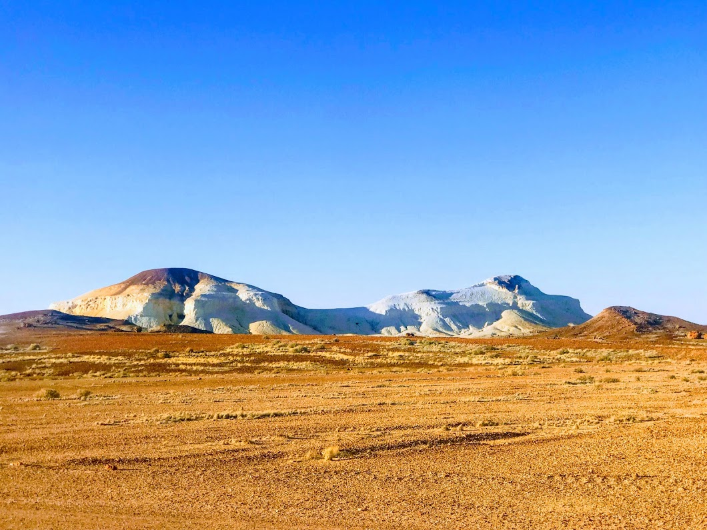

CooberPedy 31-Dec-2018
-
The pt August Tower
After the beautiful sunset I don’t wanna miss the sunrise , yes we found a pefect spot for it the Pt.Augusta Tower.
-
0700 pt augusta sunrise

we both rushed to the stairs on to the top of towers to get the perfect view , Dam its too windy and too cold at the top. Disappoitment there was a huge mass of cloud and the sun shyed away. Worth the view though.
-
Aussie Breakfast
I was not that hngry before seeing this, thanks to the awesome accomodation.
-
1000 wharfland esplanade pt augusta
shower and Breakfast are done fill up the tank and lets start , ooh the esplande lets take a pic there… don’t wanna miss a picture ..lol
-
1230 nurungar view point
after a 2.5 hrs drive there are a series of beautiful view points , really a worth the view
-
130 glendambo water mill
had to stop for lunch and refuel and you don’t have a choice except the town Glendambo middle of nowhere . The temprature is so high to 40 degrees but his picture stays cool forever.
-
0700 oasis tour
around 7 we reached cooper pedy, the Opal town of Australia. Before we talk about Cooper Pedy had to rush for the Oasis tour.
-
Opal
Opal's are pricy shiny stones formed by decomposing fossils and mined here in cooper pedy. Coober Pedy is the Opal capital of the world, the mining and processing of them is so hard it makes them so expensive. This picture is an unpolished opal which our tour guide kept in his hide out.
-
Opal
Opal's are pricy shiny stones formed by decomposing fossils and mined here in cooper pedy. Coober Pedy is the Opal capital of the world, the mining and processing of them is so hard it makes them so expensive. This picture is an unpolished opal which our tour guide kept in his hide out.
-
0740 dog fence
Australia holds the world record for world's longest fence, its the dingo fence. It is 5,531 km, long that runs from eastern Queensland all the way to the South Australian coastline. The purpose of this fence is to keep Dingo (Wild dogs ) away from sheeps to support the farmers. it took five years to build this from 1880 to 1885. its just made of tree stumps and stands perfect for more than 130 years.
-
pyramid rock
don’t wanna miss a sielfie here , inside the deserted zone.
-
Camel Rock
This looks like a camel sleeping.
-
0800 antakirinja lands
you need more imagination so see two Dogs sleeping here , these rocks are natural wonders on its own.
-
awesome Views
these views are really awesome
-
0900 new year sunset
we had a spectacular performance from the sun setting down at 930 , the golden sky invaded by the dark and the whole horizon shines . You cant ask more on a new Year eve.
-
cave night
very active day it comes to an end in the cave. Cooper pedy is also famous for its underground accomodation, the opal minners convert the mines in to by carving them in to bed rooms and kitchen. The temprature inside is 18 degrees and so comfy we fell asleep so quick
-
Briyani
oh.. We did finish out new year with Indian Style … Biryani for dinner..